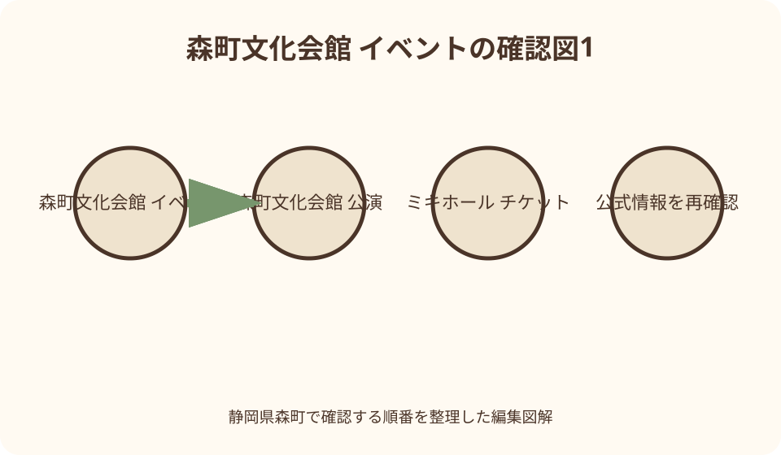
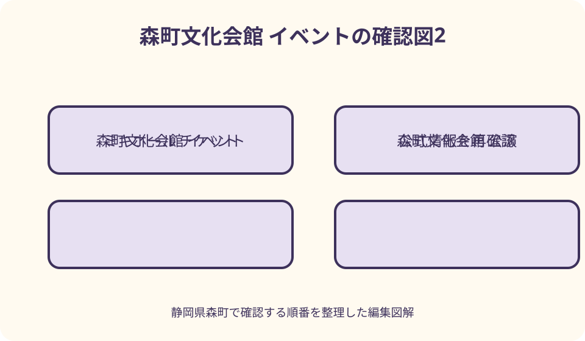

イベント・公演｜最終確認 2026-08-10
静岡県森町文化会館のイベント・公演を探す｜発売・当日券・帰路の確認手順
森町文化会館の催しは、まず会館公式のイベント情報、次に森町広報のホールガイドを確認し、公演名・日付・会場・主催者・問い合わせ先を照合します。会館やミキホール文化振興会の主催公演と、外部団体が会場を借りる貸館催事では、券の販売・変更・払い戻し窓口が異なります。「近日発売」「販売中」「無料」「関係者」などの表示を開いた日付とともに確認し、当日券や入場可否が書かれていなければ主催者へ直接尋ねてください。

編集イラスト最初に見る三か所——会館トップ、イベント一覧、森町広報
静岡県森町文化会館の催しを探すときは、検索エンジンの一覧だけで完結せず、文化会館公式トップの新着、イベント情報一覧、森町広報のホールガイドを順に見ます。更新日と公演日を区別して記録します。
会館トップには注目公演や「近日発売」「好評販売中」などの状態が掲載されることがあります。表示だけを見て席が残ると考えず、各公演の詳細ページを開き、発売日、販売窓口、会場、券種を確認します。
イベント一覧は会館が個別ページを作る催しを探しやすい一方、貸館催事や関係者行事のすべてが詳細ページになるとは限りません。広報のホールガイドで同じ月の大・小ホール予定を補います。
最後に主催者の公式サイトや連絡先を確認します。会館サイトに載る催しでも、変更受付や券販売を外部主催者が担当する場合があります。どこで見つけたかより、誰が最新情報を持つかを優先します。
公演名を検索する——日付と会場を一緒に入れる
公演名だけでは、同じ出演者の別会場、過年度公演、ツアー日程が混ざります。「森町文化会館」「開催年」「出演者または催し名」を組み合わせ、検索結果から森町公式または主催者公式へ進みます。
見つけたページでは、更新日より先に公演日を見ます。更新が新しくても対象が過去公演の記録である場合があり、公演日が先でも発売前や延期後の情報かもしれません。状態を一行で控えます。
会場は大ホール、小ホール、研修室、展示ギャラリー、お祭り広場など具体的に確認します。住所が森町文化会館で一致しても、受付入口、客席、屋外開催、雨天対応は会場区分で変わります。
同じ日に午前・午後、二回公演がある場合は、券面の回、開場、開演を照合します。昼公演の販売ページから夜公演へ入れると考えず、各回の残席と入場条件を販売元へ確かめます。
主催公演と貸館催事を分ける——会場名を販売者名と読まない
森町文化会館では、ミキホール文化振興会等が主催する公演、町の部署が行う式典や講座、外部団体が会場を借りる発表会などが開催されます。すべてを会館主催として問い合わせません。
公演詳細やホールガイドの「主催者・問合せ先」欄を読み、券、参加申込、内容変更、撮影について質問する相手を決めます。文化会館が会場を貸しているだけなら、出演者や当日券を回答できない場合があります。
会館の施設予約カレンダーで「予約済」と表示されても、一般入場できるイベントが確定したとは限りません。準備、非公開行事、練習、関係者利用もあり得るため、予約状況を催事一覧として使いません。
無料と書かれた催しも、申込制、招待、対象地域、関係者限定、整理券がある場合があります。料金がゼロであることを自由入場と同義にせず、主催者欄と対象者欄を確認します。

広報のホールガイドを読む——掲載締切と変更注記を見る
森町広報には、日付、開始時刻、会場、催し名、主催者・問い合わせ先、入場料等を並べるホールガイドが掲載される号があります。月内の予定を一覧で探す入口として使えます。
ホールガイドには「申請分まで掲載」や、内容変更の可能性、詳細は主催者へ確認する旨が記される場合があります。広報発行後に追加、延期、中止、時刻変更があるため、訪問前に主催者へ最新情報を確認します。
「関係者」とある催しは、会場に空席があっても一般入場を前提にしません。「無料」は申込や整理券の有無、「有料」は販売窓口と価格を詳細ページまたは主催者へ確認します。
広報PDFの文字認識が崩れている場合は、日付や数字を検索結果の抜粋から転記せず、紙面画像を拡大します。それでも読めなければ文化会館へ号数と催し名を伝え、正しい時刻を尋ねます。
発売表示を読む——近日発売・販売中・完売を時点情報として扱う
会館トップの「近日発売」や「好評販売中」は、ページを確認した時点の表示です。発売日を過ぎても表示更新に時間差がある可能性を考え、販売窓口で現在の受付状況を確かめます。
発売日は、友の会先行、一般窓口、電話予約、オンライン、他プレイガイドで別の日になる公演があります。最も早い日だけを共通発売日として書かず、自分が使う購入方法の開始日時を見ます。
完売表示があっても、当日券、追加席、キャンセル戻りが必ず出るわけではありません。逆に販売中でも希望席や希望枚数が残る保証はありません。再販売を期待して会館周辺で待ちません。
販売状況を人へ伝えるときは、「二〇二六年八月十日に会館ページで販売中表示を確認」のように確認日を添えます。恒久情報のように転載せず、購入者には公式販売元での再確認を促します。
窓口販売を確認する——会館の取扱時間と発売日の入口を分ける
文化会館窓口で券を扱う公演でも、販売開始時刻、休館日、入場口、購入枚数、購入者カードが公演ごとに案内される場合があります。会館の通常受付時間だけを見て発売日に並びません。
二〇二六年の個別主催公演では、一般販売開始、会館中央口、館内入場開始、待機場所なしという具体的な案内例があります。これはその公演の条件であり、別公演へそのまま適用しません。
早朝や前夜からの場所取りは行わず、主催者が示す入館時刻と列の作り方に従います。友の会先行販売についても、会員証、購入枚数、整理券等の最新案内を対象公演ページで確認します。
窓口で座席を選べる場合も、確保済みになる時点、支払方法、発券、変更・取消を確認します。座席表を見ている間に仮押さえされると想定せず、係員の説明に従い、その場で券面を照合します。

電話予約を確認する——仮予約と購入完了を区別する
個別公演ページに電話予約がある場合、受付開始日、受付時間、電話番号、休館日を確認します。一般窓口販売と電話受付が同日開始とは限らず、発売日前に電話しても予約枠を先取りできません。
「仮予約」と表記される場合は、座席確定、支払期限、券の受取、送料、手数料、予約番号を尋ねます。電話を切っただけで購入完了と考えず、次に必要な手続を復唱し、期限を記録します。
つながりにくい時間でも、複数人が同じ名義で同時に予約して重複させません。問い合わせと予約の電話番号が同じ場合は、公演名、希望枚数、希望回を短く伝え、他の利用者の受付時間へ配慮します。
遠方からの購入方法として電話や外部プレイガイドが案内される場合があります。券の郵送や当日引換が必ず選べるとは限らないため、受取方法と期限を移動計画より先に確定します。
当日券を探す——記載がなければ販売未定として問い合わせる
当日券は、前売券がある公演なら必ず販売されるものではありません。公演ページ、主催者SNS、販売元のお知らせに、販売の有無、開始時刻、場所、券種が出ているか確認します。
情報が見つからなければ「当日券なし」と断定せず、主催者へ問い合わせます。ただし回答がないまま会館へ向かい、入口で余席を交渉しません。入場できなくても困らない別目的と組み合わせる方法も避けます。
当日券があっても枚数限定、現金のみ、席を選べない、開演後は販売終了などの条件があり得ます。販売開始前の列、代表者購入、年齢証明、支払方法を案内どおり確認します。
無料催事でも当日参加枠があるとは限りません。事前申込、往復はがき、フォーム、整理券、対象者限定の可能性があるため、「無料」と「当日券」を別の欄で調べ、受付期限も確認します。
年齢・対象・持ち物を読む——未就学児不可を全公演へ広げない
文化会館の主催公演には、未就学児の入場を断る個別例があります。一方、親子向け、学校行事、読み聞かせ、文化祭では対象が異なります。年齢条件は公演ごとに確認します。
子ども料金、高校生以下無料、膝上鑑賞、託児、親子席があるかは主催者へ尋ねます。無料対象でも電子券や整理券取得が必要な催しがあるため、年齢を示すだけで入場できると考えません。
関係者行事、成人式、講座では、町内在住、学年、招待状、申込完了など参加条件があります。文化会館で開催されることを一般公開の根拠にせず、対象者と受付方法を確認します。
持込禁止、履物、飲食、撮影、応援物、花束、危険物等の注意は催しにより異なります。施設全体の一般ルールに加え、主催者が示す当日注意を読み、入口で預かってもらえると期待しません。
開場・開演・終了予定を確定する——開始時刻だけで動かない
イベント詳細では、開場と開演を別々に控えます。広報のホールガイドに開始時刻だけが載る場合は、それが開場か開演かを主催者へ確認します。建物へ入れる時刻とも区別します。
終了予定が掲載されない公演は、上演時間、休憩、アンコール、物販、規制退場を主催者へ質問できるか確認します。帰りの最終列車へ間に合うと推測で予約せず、次便も調べます。
二回公演では入替、再入場、物販時間が設けられる可能性があります。一枚の券で両回見られると考えず、回ごとの券と入口案内を読みます。遅刻時の入場方法と受付終了も確認します。
式典や発表会は進行で終了が前後する場合があります。迎えやタクシーを終演時刻ぴったりに置かず、連絡できる待合場所と退場時間を加えて手配し、変更時の連絡方法も決めます。
座席と車いす席を確認する——公演の販売画面を基準にする
大ホールには固定席七百九十七席、車いす専用席三席という施設情報と公式座席表があります。しかし、公演で販売される席、関係者席、撮影席、見切れ席は異なるため、販売画面や窓口を基準にします。
小ホールは平土間の可変配置なので、大ホールPDFを使えません。自由席、整理番号、椅子配置、車いす位置は主催者へ確認します。研修室や展示では座席自体がない場合もあります。
車いす席は外部プレイガイドで販売せず、文化会館への問い合わせを求める個別公演例があります。一般券を先に買う前に、同伴者、移乗、入口、駐車・送迎とともに相談します。
補聴、字幕、手話、音声ガイド、見え方への配慮は、設備があるともないとも一括断定しません。催しの主催者と会館に希望を伝え、対応可否、席、機器、申込期限を確かめます。
駐車情報を探す——通常の270台と公演日の誘導を分ける
文化会館公式アクセスは駐車場二百七十台と案内していますが、図書館や他の貸室と共有されます。個別公演ページに当日駐車や車両誘導図がある場合は、通常案内より公演日の指示を優先します。
駐車開始、臨時区画、満車時の扱い、車いす乗降、終演後の出口を確認します。案内がない場合は会館または主催者へ問い合わせ、近隣施設へ無断で停める代案を作らず、鉄道も調べます。
人気公演では早着しても駐車できる保証はなく、早朝待機が認められるとも限りません。券販売日の待機案内と公演日の入庫案内を混同せず、係員の誘導に従い、指定外へ並びません。
終演後は歩行者と出庫車が重なります。入口近くへ停めることだけを優先せず、出口方向、暗さ、同行者の歩行を考えます。区画を写真またはメモで残し、車道上で探し回りません。
公共交通と終演帰路を組む——森町病院前駅を先に調べる
文化会館公式アクセスは、天竜浜名湖鉄道の森町病院前駅から徒歩約一分、遠州森駅から徒歩約十分と案内しています。公演日の列車は天浜線公式で、往路と復路を別々に確認します。
終演予定へ退場、トイレ、駅までの歩行を加え、乗れる便を二本選びます。公式の徒歩分数は目安で、夜間、雨、混雑、子ども、歩行補助を含む保証ではないため余裕を加えます。
バスは森町公式の公共交通ページから運行事業者、停留所、曜日、予約要否、最終便を確認します。公演案内に記載がないことを、バスがない、または毎日あるという判断に使いません。
最終便に余裕がなければ、迎え、タクシー、次便まで安全に待てる方法を用意します。終演前に退出すればよいという計画を基本にせず、上演を最後まで見た後の帰路を購入前に成立させます。
中止・延期・払い戻しを確認する——購入元へ戻る
荒天、出演者都合、設備、感染症等で催しが変更される可能性があります。会館、主催者、販売元の公式発表を確認し、古い公演ページやSNS転載だけで中止・開催を判断しません。
中止と延期、出演者変更、開始時刻変更では、払い戻し条件が異なる場合があります。対象券、受付期間、購入場所、紙券の保存、手数料、郵送を案内で確認し、期限を過ぎないようにします。
外部プレイガイドで買った券を文化会館窓口で返金できるとは限りません。会館窓口、電話仮予約、コンビニ発券、招待券など、自分の取得方法に対応する窓口へ進み、受付番号を控えます。
交通費や宿泊費、駐車代の補償を当然と考えず、購入規約と主催者発表を読みます。払い戻し期限まで券と決済記録を保管し、延期日に使う券か返金対象券かを取り違えません。
見つからない時の代案——開催を推測せず、問い合わせ先を探す
会館イベント一覧に催しが見つからない場合は、森町広報の当月・前月ホールガイド、主催団体公式、出演者公式を確認します。施設予約状況だけを根拠に一般イベントがあると推測しません。
チラシだけを見た場合は、主催者名、電話、開催年、会場、申込締切を読みます。画像が古い、年が切れている、連絡先が確認できない場合は、文化会館へ催しの把握範囲を問い合わせます。
発売情報がまだないなら、発売開始前と売切れ後を区別できる表現が出るまで待ちます。非公式転売、個人間取引、検索広告へ進まず、会館のお知らせ更新や友の会会報等の正規発表を確認します。
目的の催しがない月は、別公演を無理に代用せず、次月のホールガイド、文化祭募集、図書館の催し、オンライン配信の正規案内を調べます。予定がないことを記事の欠落として埋めません。
良い点——一覧、広報、個別ページで情報の深さを変えられる
森町文化会館のイベントを探す良い点は、会館トップで注目公演、イベント一覧で個別詳細、広報ホールガイドで月内の貸館催事というように、異なる入口を使い、相互に照合できることです。
個別主催公演ページには、発売日、電話予約、プレイガイド、年齢制限、座席、車いす席、駐車案内まで掲載される例があります。一方、貸館は主催者へ確認するという境界も明確にできます。
大・小ホールだけでなく、研修室、展示ギャラリー、屋外広場の催しも広報から見つかる可能性があります。会館名だけで大型公演を探すより、地域の講座や発表へ関心を広げられます。
森町病院前駅に近く、車以外の帰路も検討できます。イベント発見時に交通を同時に確認すれば、券を買った後に最終便がないと分かる失敗を避け、参加可能な公演を選べます。
注文したい点——主催・発売・入場・変更・帰路を最新化する
注文したい点の第一は、主催者と問い合わせ先です。会館自主事業、町行事、外部貸館を分け、券や内容を回答できる窓口へ連絡します。公演名と日付を伝えて別公演との混同を防ぎます。
第二は、発売と入場です。先行、一般、電話、オンライン、当日券、支払、受取、指定・自由、年齢、申込を確認します。表示された価格だけで購入方法が決まったと考えません。
第三は、開場、開演、終了予定、中止・延期・払い戻しです。確認日を記し、購入元の規約と主催者発表を保存します。出演変更だけで返金されるという独自ルールを作りません。
第四は、座席、駐車、公共交通、終演後です。公演配席、車いす等の支援、共有駐車の誘導、森町病院前駅、バス最終便を調べ、退場時間を加えた帰路を同行者と事前共有します。
対案・結論——公演を見つけたら、主催者から帰路まで一枚にする
結論として、会館トップと広報から公演を見つけたら、公演名、日付、会場、主催者、問い合わせ先を一枚に書きます。詳細ページで発売と入場条件を足し、券を買う前に終演後の交通を確定します。
会館主催なら会館の販売案内、貸館なら外部主催者の申込・券情報を優先します。無料、販売中、関係者という短い表示だけで一般参加可否を決めず、対象、整理券、残席を確認します。
当日券が不明なら販売を期待して向かわず、中止・延期時は購入元へ戻ります。情報が見つからない月は、広報、主催団体、次回発表を待ち、予約済カレンダーから催しを作りません。
座席や駐車は会館の固定情報ではなく、公演日の運用を確認します。帰りの森町病院前駅、遠州森駅、バス、送迎まで成立して初めて、そのイベントを自分の予定へ登録します。
大石の視点——イベント探しは、行ける条件を確かめる編集作業
私がミキホールの公演を探すなら、華やかな出演者写真より先に主催者欄を見ます。次に販売窓口、開場、終演予定、帰りの列車を並べ、空欄が一つでもあれば問い合わせます。
「販売中」という二文字は、希望枚数、車いす席、子どもの入場、当日券を説明しません。短い表示を出発点にして、個別ページと販売元へ進むことで、買えることと参加できることを分けます。
貸館催事が詳細ページにないことも、価値が低い意味ではありません。広報ホールガイドの主催者欄から地域の発表会や講座を見つけ、一般参加できるかを丁寧に尋ね、回答日も記録します。
最後に残すのは公演名のメモだけではなく、確認日と情報源です。変更が出たとき、どこを見直せばよいか分かります。イベントを探すとは、断片を集めて安全な一日の予定へ編集することです。
公式情報・確認先
掲載内容は次の一次情報を基礎に整理しました。営業、料金、催し、交通は変わるため、出発前または手続き前にリンク先で最新情報を確認してください。
- 森町文化会館（静岡県森町文化会館、2026-08-10確認）
- イベント情報（静岡県森町文化会館、2026-08-10確認）
- 森町文化会館施設紹介（静岡県森町、2026-08-10確認）
- 森町文化会館 ご利用案内（静岡県森町、2026-08-10確認）
- 森町文化会館 アクセス（静岡県森町、2026-08-10確認）
- 大ホール・リハーサル室・楽屋（静岡県森町、2026-08-10確認）
- 森町文化会館施設予約状況（静岡県森町文化会館、2026-08-10確認）
- 友の会先行発売日のチケット販売方法と注意事項（静岡県森町文化会館、2026-08-10確認）
- 森町広報 ホールガイド掲載例（静岡県森町、2026-08-10確認）
- 森町の公共交通について（静岡県森町、2026-08-10確認）